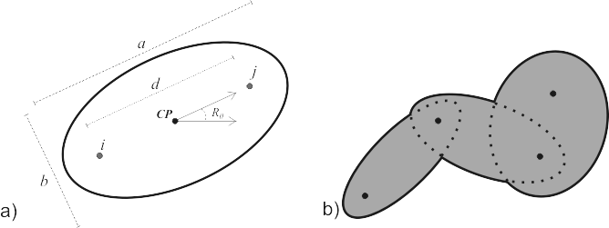

Spatial Pattern Analysis & Research Lab
Spatial Pattern Analysis & Research Lab
Calculating the PPA Home Range
This website contains instructions and access to tools useful for computing the PPA home range which is described in the article:
Long, JA and TA Nelson (2012) Time geography and wildlife home range delineation. Journal of Wildlife Management. 76(2): 407-413
The PPA home range draws on the concept of the potential path area (PPA) from time geography. Between two telemetry fixes the PPA home range can be simply defined as the area accessible to the animal conditional on the mobility parameter - vmax. In space this object is computed as a perfect ellipse, whose geometric properties can be derived from the coordinates of the telemetry fixes, the time difference between them, and vmax (see Figure 1a). The PPA home range is then the spatial union of the individual PPA ellipses between each pair of consecutive telemetry fixes (see Figure 1b).

Figure 1: a) Calculation of the PPA ellipse between telemetry fixes i and j requires parameters obtained from the geometry of the two points, their time difference, and the mobility parameter (vmax): a - major axis, b - minor axis, d - distance between fixes i and j, CP - center point of i and j, and Rθ - the rotation from the horizontal. b) The computation of the PPA home range is the spatial union of n-1 PPA elipses.
Here we provide code for implementing the PPA home range in a few ways. Please note the R version of the implementation is by far the most advanced, and has been updated more recently to include new ways for computing the vmax parameter.
-
The statistical software R
- Download the R code and instruction guide here
-
In the GIS software ArcGIS
- We have created a tool that is stored as a .mxd file for use in ArcGIS 9.3 available here.
- Alternatively, a VBA script that can be run within ArcGIS 8.x, and 9.x can be downloaded here.
- We are also looking into creating a newer version of the tool in Python for use in ArcGIS 10, that will hopefully be a bit more user friendly.
Should you have any further questions please contact me via email: jlong AT uvic.ca